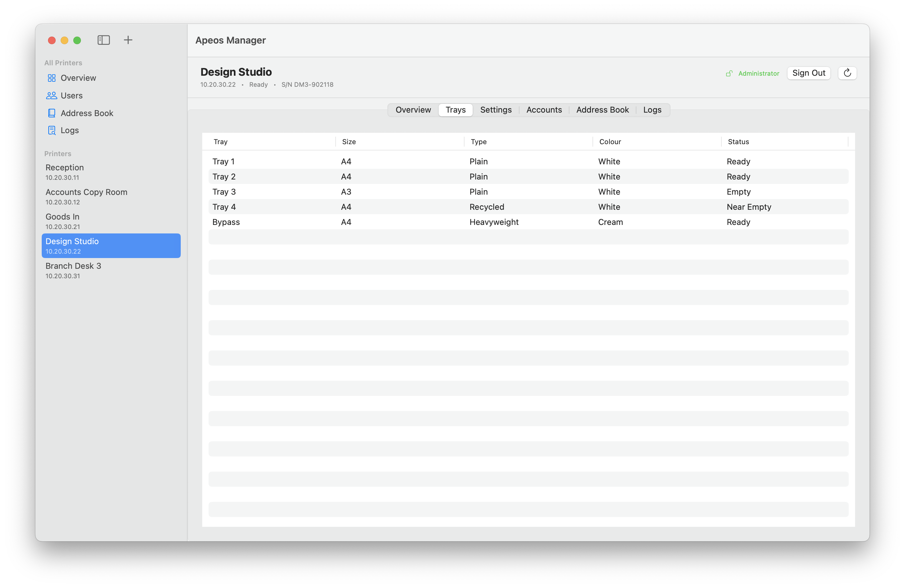
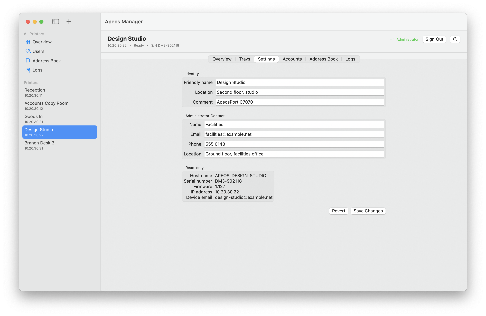
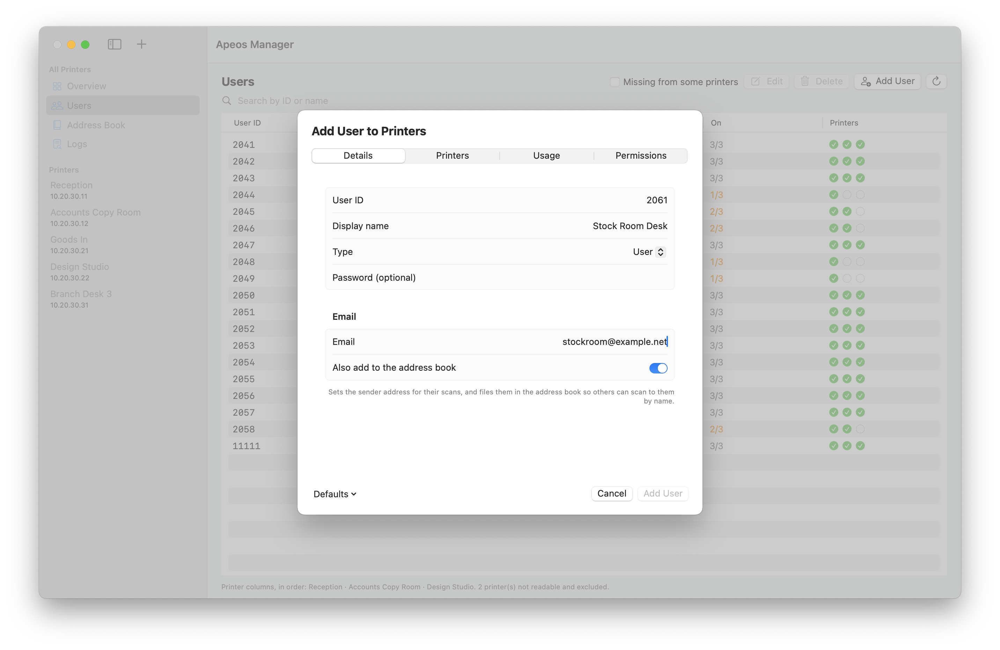
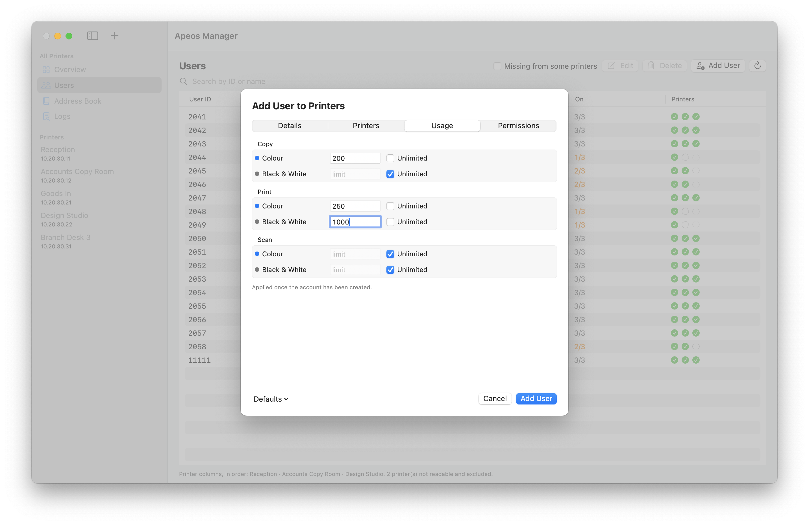
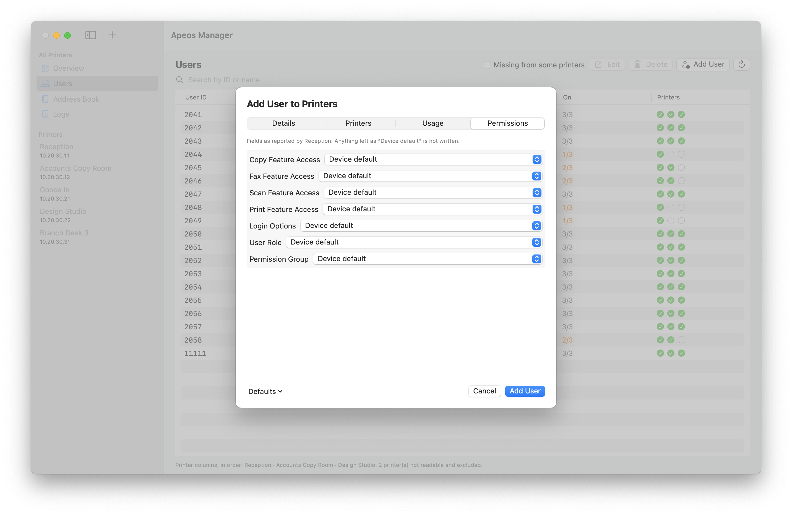
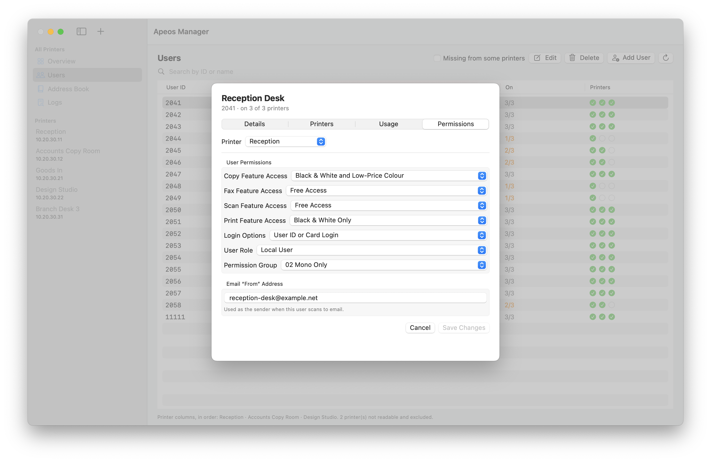
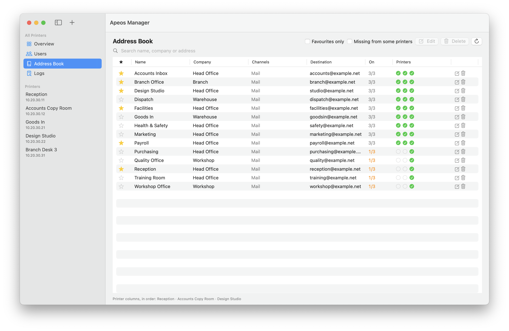
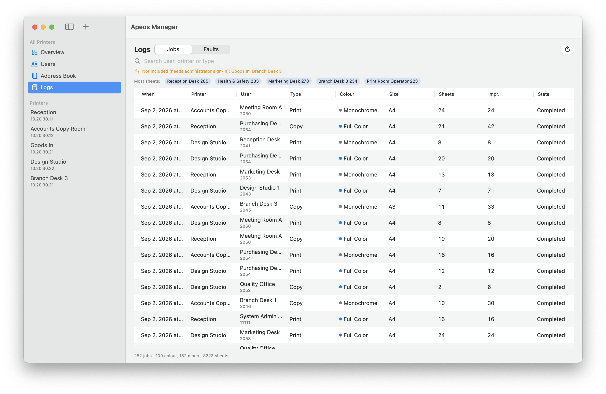
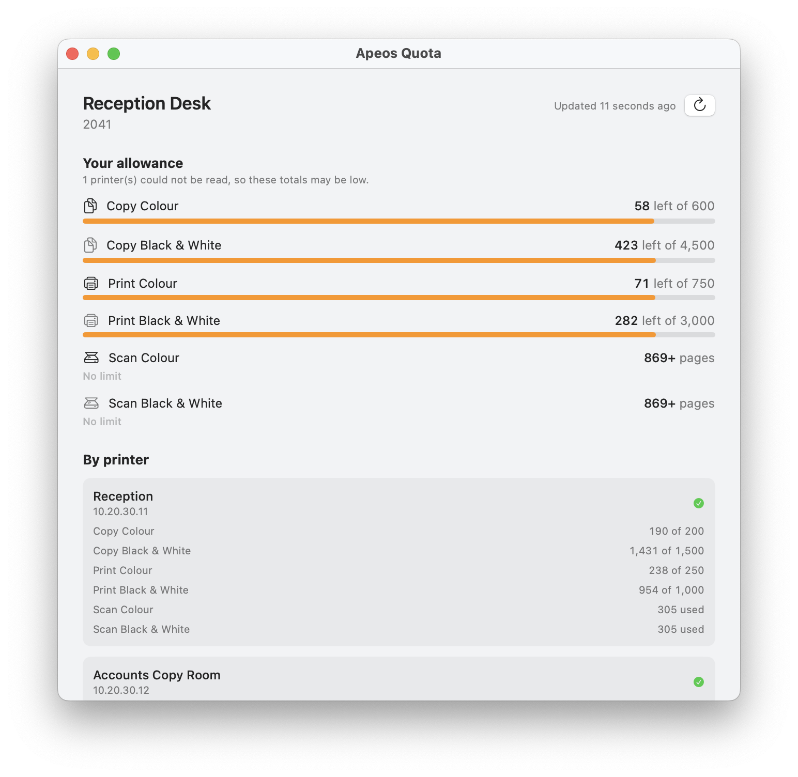

Documentation
Apeos Manager and Apeos Quota, for FUJIFILM Apeos and ApeosPort multifunction printers. Built and verified against Apeos C6570, C3570 and C3530 hardware.
Installing
macOS 14 or later. The release is a single zip containing both applications, signed with a Developer ID certificate and notarised by Apple, so it opens without a warning and without a right-click bypass.
- Download the zip from the releases page and unzip it.
- Drag Apeos Manager and Apeos Quota to your Applications folder.
- Open either one.
The two are independent. An administrator wants the first; everybody else wants only the second, and it works on its own.
Adding printers

Either type the printer's address, or sweep a subnet with Scan
Network. The sweep probes prefix.1 through
prefix.254 for a device that answers
/home/api/device-status, which is the one endpoint every model
tested serves without authentication.
The suggested prefix comes from a printer you have already added, in preference to your Mac's own interface. Printers are frequently on a different subnet from the machine managing them, and offering only the local interface would sweep 254 addresses and find nothing.
Test Connection reads the device's identity before you commit to it. Some models will not answer that without an administrator session, in which case the sheet says so and asks for a password rather than reporting the printer as unreachable.
Passwords and the keychain
Administrator passwords go to your login keychain, never to a preferences file. Each is stored under the printer's own identifier, so renaming a printer does not lose its password.
Demonstration mode
Both apps contain a fictional fleet. Launch either with
-demoMode YES:
/Applications/Apeos\ Manager.app/Contents/MacOS/ApeosManager -demoMode YES
/Applications/Apeos\ Quota.app/Contents/MacOS/ApeosQuota -demoMode YESFive printers, nineteen accounts, and one of every state the apps distinguish: a healthy device, one low on toner, one that cannot be reached, one that refuses reads without an administrator session, and one that reports itself Ready while a drum inside it is spent. It is the quickest way to learn what a screen is telling you before pointing the app at your own hardware.
A demo run touches nothing of yours. It contacts no address on your network, reads no credential from your keychain, and writes nothing to your settings. The network client refuses to be constructed under the flag at all, so there is no path by which a demo could reach a device even if one were configured.
Fleet overview

Needs Attention gathers consumables at or near their end across every printer, worst first. A red marker means the part is finished; amber means it is close.
Each card carries the device's own status badge. That badge is the printer's opinion of itself, and it is not always right — in the screenshot above, Design Studio reports Ready while its cyan drum is spent. Read the attention list, not the badge.
Printers that cannot be read say why:
| What it says | What it means |
|---|---|
| Could not connect | Nothing answered at that address. The printer is off, asleep, or on a network this Mac cannot reach. |
| Requires an administrator sign-in | The device answered, but serves nothing except its status without a session. Add its password, or use Sign In. |
| Could not read: … | Some endpoints answered and others did not. Which ones is listed; coverage varies by model and firmware. |
One printer

Selecting a printer in the sidebar gives its own tabs: Overview, Trays, Settings, Accounts, Address Book and Logs.

Trays lists each tray's size, media type, colour and level.

Users

The fleet Users screen merges the directories of every readable printer. The On column counts how many hold each account, and the columns to its right say which. Missing from some printers filters to accounts that are not everywhere — usually the thing you actually came to find.
Printers that could not be read are excluded and named at the foot of the screen, so a missing tick is never confused with a printer that simply did not answer.
Add User creates an account on as many printers as you choose at once. Every write is read back afterwards and any mismatch is reported: these devices accept some requests without applying them, and answer HTTP 200 either way.
Adding a user
The sheet has four panes. Only Details and Printers are required; the other two are applied after the account exists, because these devices reject a creation request that tries to set accounting or permissions at the same time.




Accounting limits

Each user carries six meters — copy, print and scan, each in colour and
black and white. A meter has a cap and a used count, and the device reports
9999999 where no cap is set. The apps read that as
unlimited rather than as a very large allowance.

Limits are editable per user, and counters can be reset. After each write the record is read back and any value the device did not store is reported against the field that failed.
Permissions

Per user, per printer:
- Feature access for copy, fax, scan and print. The available settings differ by service — fax offers only full access or none, and print offers a combination copy does not.
- Login methods the panel will accept for this user: user ID, card, both, or neither. A device without a card reader does not offer the card option at all.
- Role — system administrator, account administrator or local user.
- Permission group, by the device's own numbered groups.
- Email “From” address used when this user scans to email.
Only fields the device actually reported are ever written back. Models differ over which exist, and writing one a device does not have is rejected outright.
Address book
Available per printer and merged across the fleet, with favourites. Entries can be added, renamed, re-addressed and deleted.

Every write is confirmed by reading it back, because the address book endpoint answers 200 to creations it then discards. Deleting a user also offers to remove the address book entry carrying their email address; that address is read before the deletion, since afterwards the device has no way to tell you what it was.
Logs

Jobs is the device's job history: who printed what, in colour or mono, on what size, and how many sheets and impressions it cost. It is searchable by user or type, and available per printer or merged fleet-wide.
Faults is the device's fault log. Codes are Fujifilm service codes and the device does not publish descriptions for them, so they are shown as given — but repeats are counted. A code seen once is noise; the same code eleven times in a fortnight is a service call, and that is the pattern a fleet-wide log exists to surface.

Job history is paged: the device refuses any request for more than twenty at a time. Load 100 More walks further back.
Apeos Quota — the user app

A menu bar app for one person. It signs in as that person, with their own user ID and passcode, and never holds an administrator credential — the device allows an ordinary user to read their own accounting meters, which is what makes a standalone app possible rather than a relay service.
The menu bar label shows pages remaining on the tightest capped meter, or pages used where nothing is capped. With neither — signed out, or nothing read yet — it shows only its icon, rather than a zero that would read as an exhausted allowance.


Refreshes are unhurried by design — fifteen minutes by default. Each one signs in, reads, and signs out again: these devices allow only a handful of concurrent sessions and this app is meant to run on every desk at once, so nothing is held open between refreshes.
How totals are worked out
Two rules, both chosen so the figure shown is never rosier than reality.
- Used adds up. Counters are per device, so fleet usage is their sum.
-
One uncapped printer uncaps the type. If any printer lets you
print colour without a cap then you are not capped for colour fleet-wide,
whatever the others say. Summing the device's
9999999sentinel into a total would instead invent an enormous but finite allowance and draw a progress bar against it.
A printer that could not be read contributes nothing, and the total is marked partial rather than presented as fact. A printer you have no account on says so, which is a different thing from a printer that failed.
Device behaviour worth knowing
None of this API is published by the vendor. It was derived by reading the web interface each device serves and verifying every call against hardware. The behaviour below is the part that affects what you see in the apps.
- Endpoint exposure varies by model. Some devices serve their status and identity to anyone on the network; others return 403 for everything except status. This is why the apps sign in before reading.
- Writes can succeed without applying. Several operations return success and store nothing. Every write in these apps is followed by a read, and mismatches are reported rather than assumed away.
- A display name persists only in one place. Writing it to the accounting record returns success and discards the value.
- Job history is device-wide and pages twenty at a time. The user app therefore scans a bounded window of recent jobs and narrows it to the signed-in user in the client — the device offers no filter that it will accept.
- Accounting configuration stays administrator-only. The capability endpoints return 403 to an ordinary user session, which is the boundary the user app relies on.
The project README carries the full list, including the request shapes each operation accepts and the ones it silently ignores.
What leaves your network
Nothing. Both apps talk only to the printers you configure, over your own network. There is no account, no telemetry, no update check and no external service of any kind.
Credentials go to your login keychain. The two apps store theirs separately, under their own bundle identifiers, so the user app cannot read administrator passwords the manager saves.
The user app reads the whole directory from each printer because the device will not filter to one user, but narrows it at the boundary: nothing except the signed-in user's own records is stored, published or displayed.
Building from source
Requires Xcode and XcodeGen.
export APEOS_SIGN_IDENTITY="Apple Development: Your Name (TEAMID)"
./build.sh # both apps
./build.sh ApeosQuota # just the user app
security find-identity -v -p codesigning lists your identities.
Signing is not optional in practice: keychain access is bound to code identity, so
an unsigned build cannot read printer passwords saved by a previous one.
To cut a signed, notarised release:
./Scripts/release.sh 1.0.0 --skip-notarize # build and sign only
./Scripts/release.sh 1.0.0 # build, sign, notarise, staple
./Scripts/release.sh 1.0.0 --publish # ...then tag and publishTroubleshooting
A printer shows “requires an administrator sign-in”
The device answered but will not serve reads anonymously. Select it, choose Sign In, and give it the administrator password. Saving the password when you add the printer avoids this on later launches.
A saved password cannot be read
The application's code signature changed, and keychain access is bound to code identity. Sign in once more and it is stored again.
The subnet sweep finds nothing
Check the prefix. Printers are often on a different subnet from the Mac managing
them, and the sweep only probes the one you give it. The sweep looks for a device
that answers /home/api/device-status; a printer that answers nothing
anonymously will not be found this way and must be added by address.
A change was accepted but did not take
That is the device, not the app, and the app says so deliberately. Some values are rejected by length or format, some fields exist only on some models, and some operations return success and store nothing. The message names the field and what the device reads back.
Apeos Quota says totals may be low
At least one printer could not be read, so the total is a lower bound. The Balance window lists each printer separately and says which one failed.